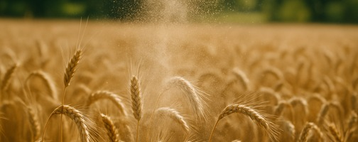

AGRITRON ist ein natürlicher Kieselgur-Bodenverbesserer auf Basis von amorphem Siliziumdioxid. In Feldversuchen beobachtet: verbessertes Pflanzenwachstum und potenzielle Ertragssteigerungen je nach Kultur und Standort. Geeignet für den ökologischen Landbau gemäß EU 2018/848. Konform mit EU-Verordnung 2019/1009.
AGRITRON is a natural diatomaceous earth soil amendment based on amorphous silicon dioxide. Observed in field trials: improved plant growth and potential yield increases depending on crop and location. Suitable for organic farming in accordance with EU 2018/848. Compliant with EU Regulation 2019/1009.

88–92% amorphes Siliziumdioxidamorphous silicon dioxide
< 1% REACH-konform, sicherREACH compliant, safe
~20 μm Bodenapplikationsoil application
0,33–0,38 g/ml
7,5–8,8 bodenneutralsoil-neutral
< 0,1 ppm Pb, As, Cd, Hg
80–110% des Eigengewichtsof own weight
38–52 meq/100g verbessert Nährstoffverfügbarkeitimproves nutrient availability
25 kg Sack / Big Bag 500–1000 kg
25 kg bag / Big Bag 500–1,000 kg
Diatomeenerde vereint zwei natürliche Eigenschaften: Siliziumversorgung für Pflanzenwachstum und eine poröse Mineralstruktur mit hoher Wasserhaltefähigkeit – ohne chemische Zusätze.
Diatomaceous earth combines two natural properties: silicon supply for plant growth and a porous mineral structure with high water retention capacity – without any chemical additives.
Amorphes Siliziumdioxid aus Diatomeenerde kann sich im Boden teilweise in pflanzenverfügbare Siliziumformen umwandeln. In Feldversuchen (MPUAT, 8 Kulturen, 2 Jahre) wurden folgende Effekte beobachtet:
Amorphous silicon dioxide from diatomaceous earth may partially convert in soil into plant-available forms of silicon. In field trials (MPUAT, 8 crops, 2 years) the following effects were observed:
Die fossilisierten Kieselalgen verleihen Diatomeenerde eine extrem hohe Porosität und eine spezifische Oberfläche von bis zu 20 m²/g. Das verbessert langfristig den Wasserhaushalt und die Bodenstruktur.
The fossilised diatom shells give diatomaceous earth extremely high porosity and a specific surface area of up to 20 m²/g. This permanently improves the water balance and soil structure.
Praxisnahe Feldversuche unter realen Anbaubedingungen
Field trials under real farming conditions
Alle Ertragsdaten basieren auf Feldversuchen der Maharana Pratap University of Agriculture & Technology (MPUAT), Udaipur, Indien – durchgeführt über 2 Vegetationsperioden und in referierten Fachzeitschriften veröffentlicht. Studien und Versuchsdaten auf Anfrage verfügbar.
All yield data are based on field trials at Maharana Pratap University of Agriculture & Technology (MPUAT), Udaipur, India – conducted over 2 growing seasons and published in peer-reviewed journals. Study summaries and trial data available on request.
125 kg/ha AGRITRON im Boden: Ertrag von 2.219 auf 2.801 kg/ha. Proteingehalt im Korn +8,5%. Pflanzenhöhe +13%.
125 kg/ha AGRITRON in the soil: yield from 2,219 to 2,801 kg/ha. Grain protein content +8.5%. Plant height +13%.
Blattapplikation 8 g/l: Ertrag von 4.067 auf 4.557 kg/ha. Ähren je Pflanze +21%, Körner je Ähre +13%.
Foliar application 8 g/l: yield from 4,067 to 4,557 kg/ha. Ears per plant +21%, grains per ear +13%.
Bodenapplikation mit Si-angereichertem Kompost: Hülsen je Pflanze +90%, Knöllchenzahl +133%, Stickstoffixierung verbessert.
Soil application with Si-enriched compost: pods per plant +90%, nodule count +133%, nitrogen fixation improved.
Blattapplikation 0,8% (8 g/l): Anthraknose-Befall um 51% reduziert, Ertrag von 169 auf 195 q/ha. Kosten-Nutzen-Verhältnis 4,96.
Foliar application 0.8% (8 g/l): anthracnose reduced by 51%, yield from 169 to 195 q/ha. Cost-benefit ratio 4.96.
200 kg/ha AGRITRON: Grünkolbenertrag von 3.060 auf 4.271 kg/ha. Pflanzenhöhe +28%, Körner je Kolben +48%.
200 kg/ha AGRITRON: green ear yield from 3,060 to 4,271 kg/ha. Plant height +28%, grains per ear +48%.
Diatomeenerde-Anteil 4% des Korngewichts bei Mais, Weizen, Soja, Schwarzen Bohnen: Kornschäden von 30,8% auf 4,4% reduziert. Physikalische Wirkung der Mineralstruktur.
Diatomite content 4% of grain weight with maize, wheat, soy, black beans: grain damage reduced from 30.8% to 4.4%. Physical effect of the mineral structure.
AGRITRON kann als Bodenapplikation, Blattspritzmittel oder zur Substratverbesserung eingesetzt werden – je nach Kultur und Ziel.
AGRITRON can be applied as soil amendment, foliar spray or for substrate improvement – depending on the crop and objective.
| Anwendung | Application | Aufwandmenge | Rate | Kultur | Crop | Methode | Method |
|---|---|---|---|---|---|---|---|
| BodenSoil | 100–150 kg/ha | Getreide (Weizen, Mais, Gerste) | Cereals (wheat, maize, barley) | Einarbeitung vor der Aussaat | Incorporation before sowing | ||
| BodenSoil | 150–200 kg/ha | Gemüse, Süßmais, Hülsenfrüchte | Vegetables, sweet corn, legumes | Einarbeitung vor der Pflanzung | Incorporation before planting | ||
| BlattFoliar | 6–8 g/l, 200 l/ha | Alle Kulturen | All crops | Spritzung alle 10–14 Tage oder pro Wachstumsphase | Spray every 10–14 days or per growth phase | ||
| BlattFoliar | 0,75–1,0% Lösung | Weizen, Mais (optimal: Bestockungsphase) | Wheat, maize (optimal: tillering stage) | Rückenspritze oder Feldspritze | Knapsack or field sprayer | ||
| TropfbewässerungDrip irrigation | 3–4 g/l, 1 kg/ha | Gewächshaus, Gemüse | Greenhouse, vegetables | Beimischung ins Bewässerungswasser | Mix into irrigation water |
Das natürliche Mineral Diatomeenerde vereint drei unabhängige Eigenschaften, die Boden und Pflanze gleichzeitig stärken.
The natural mineral diatomaceous earth combines three independent properties that simultaneously strengthen both soil and plant.
Amorphes Siliziumdioxid kann sich im Boden teilweise in pflanzenverfügbare Siliziumformen (Si(OH)₄) umwandeln. Die Pflanze nimmt es über die Wurzeln auf und baut es in Zellwände ein – das stärkt die mechanische Resistenz gegen Wind, äußere Einflüsse und Stressfaktoren.
Amorphous silicon dioxide may partially convert in soil into plant-available forms of silicon (Si(OH)₄). Plants absorb it through the roots and incorporate it into cell walls – strengthening mechanical resistance against wind, external stress and environmental stressors.
Die poröse Struktur der Diatomeenschalen erhöht die Kationenaustauschkapazität des Bodens, verbessert die Wasserhaltekapazität und fördert die Verfügbarkeit von Phosphor, Stickstoff und Kalium aus dem Boden.
The porous structure of the diatom shells increases the cation exchange capacity of the soil, improves water retention capacity and promotes the availability of phosphorus, nitrogen and potassium from the soil.
Diatomeenerde ist chemisch inert und thermisch stabil. Das Mineral zersetzt sich nicht im Boden, sondern gibt Silizium über viele Vegetationsperioden langsam ab. Geringe Auswaschung unter üblichen Bodenbedingungen, keine chemischen Rückstände, langfristiger Effekt im Boden.
Diatomaceous earth is chemically inert and thermally stable. The mineral does not decompose in the soil, but releases silicon slowly over many growing seasons. Low leaching under typical soil conditions, no chemical residues, long-term effect in soil.
Wir liefern Produktmuster mit vollständigem Datenblatt – ohne Mindestmenge, ohne Verpflichtung. Anfragen beantworten wir innerhalb von 24 Stunden.
We supply product samples with a complete data sheet – no minimum order, no obligation. Enquiries are answered within 24 hours.
AGRITRON · Kieselgur Bodenverbesserer
AGRITRON · Diatomaceous Earth Soil Amendment
Rechtlicher Hinweis: AGRITRON ist ein mineralischer Bodenverbesserer (Soil Improver) gemäß EU-Verordnung 2019/1009 (PFC 3 / CMC 1) und zur Anwendung in der Pflanzenproduktion bestimmt. AGRITRON ist nicht als Pflanzenschutzmittel oder Biozid zugelassen. Die auf dieser Seite zitierten Forschungsergebnisse beschreiben Eigenschaften von Diatomeenerde als natürliches Mineral und stammen aus akademischen Feldversuchen der Maharana Pratap University of Agriculture & Technology (MPUAT), Udaipur, Indien. Tatsächliche Ergebnisse können je nach Bodenart, Klima, Sorte und Bewirtschaftung variieren. Technische Datenblätter, Analysezertifikate und Konformitätserklärungen sind auf Anfrage erhältlich.
Legal notice: AGRITRON is a mineral soil improver pursuant to EU Regulation 2019/1009 (PFC 3 / CMC 1) intended for use in plant production. AGRITRON is not authorised as a plant protection product or biocide. The research results cited on this page describe properties of diatomaceous earth as a natural mineral and originate from academic field trials at Maharana Pratap University of Agriculture & Technology (MPUAT), Udaipur, India. Actual results may vary depending on soil type, climate, variety and management. Technical data sheets, analysis certificates and declarations of conformity are available on request.